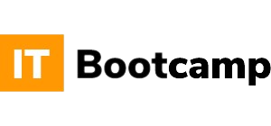
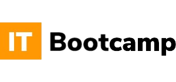

Welcome to
my portfolio!
📜 About me
I am an enthusiastic software development engineer with over 3 years of experience in software engineering. Proficient in JavaScript and TypeScript, various front-end frameworks, and libraries, with React and related frameworks as my tools of choice for various projects.
I have always been a supporter of data-driven business development and I seek to help people make their own business decisions by representing big data in a simple, readable and understandable forms. I am always curious about new tools, languages and libraries I could add to my arsenal.
Thank you for taking the time to visit my personal webiste! I have added a few interesting features that might be hidden. For starters, you can hover over this section to make it more visible for yourself! Explore the page and see if you can find the rest.
📜 Companies I had the pleasure of working with

 
📜 About some of my projects
- I am very proud of my work as a teacher for ITBootcamp where me and another software developer were responsible for teaching React.js to a class of 26 pupils. Before their work with us they had education in HTML CSS and JavaScript. Most of them found gainfull employment shortly after finishing the program. In adition to React.js, I am an instructor for HTML, CSS, JavaSscript and Typescript.
- As I saw a need for a development of an in-house solution for tracking the knowledge progress of fellow developers, I recommended the entire app to the management and my implementation was approved. So I started developing the entire app from the ground up, which also server as a knowledge repositorium for various topics - React, Angular, JS, Node etc. All curriculums were curated by senior developers. Over time I was assigned developers to assist on the project, and while we had many issues, it was ultimately a great success, which I am very proud of.
- As a part of a great team I helped design an in-house library for other developers to use. It was for a large international air company, and the solution required development of React components that could be just called from the library and customised through props.
- Working with another great team on a complete web solution for a US medical company was one of my greatest trials. It included multi-form flows where a lot of the information sent and received depended on various inputs from the user, as well as a complex e-mailing system.
Contact me: